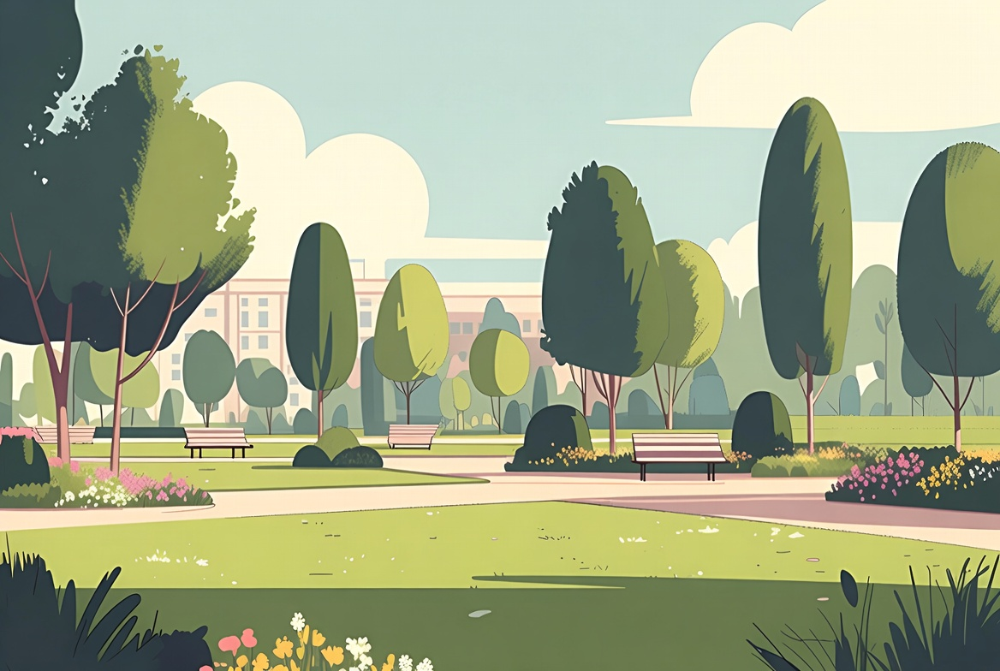

Alemão A1 · Aula 20 de 30 · GrátisClima e estações
Nesta aula você vai aprender a descrever o tempo e escolher atividades.
 Lektion 20
Lektion 2001 · Primeiro, escuteDiálogo em contexto
Ouça a conversa completa e acompanhe a tradução em português.

Anna e LukasWie ist das Wetter heute?Como está o tempo hoje?
02 · Frases essenciaisEscute e repita
Aprenda cada expressão como um bloco completo.
01Wie ist das Wetter heute?
Como está o tempo hoje?
02Es ist sonnig und warm.
Está ensolarado e quente.
03Gehen wir in den Park?
Vamos ao parque?
04Gern. Morgen regnet es.
Com prazer. Amanhã vai chover.
05Dann nehme ich morgen einen Regenschirm mit.
Então vou levar um guarda-chuva amanhã.
06Gute Idee.
Boa ideia.
07es ist
descrever o tempo e escolher atividades
08es regnet,
A situação completa
03 · Entenda a lógicaExplicação em português
O alemão fica visível; a explicação ajuda você a entender como usar.
Explicação 1Dein Beispiel
Agora tente descrever o tempo e escolher atividades, trocando uma informação por algo verdadeiro sobre você.
Explicação 2Sonne
sol. Muitos adjetivos de clima terminam em -ig:
Explicação 3Es regnet
é um caso especial: o próprio verbo já diz tudo, sem adjetivo.
Explicação 4es regnet, es schneit
neva. Não há sujeito real, é como o nosso 'chove'.
04 · FixaçãoTeste o que aprendeu
Escolha a tradução correta e confira na hora.